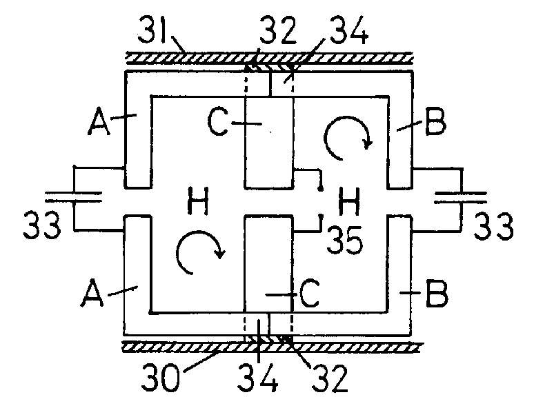

The following is a U.S. Patent granted to Harold Aspden as Assignee (coinventor John Scott Strachan) with an issue date of November 12, 1991.
Abstract: A thermoelectric energy converter incorporates thermocouples in a circuit carrying A.C. current via capacitors which provide electrical coupling but obstruct heat transfer between hot nd cold junctions. The cyclic current oscillations through ther capacitors are diverted by special circuits so as to be rendered asymmetrical as current oscillations through the thermoelectric junctions. One such circuit includes the use of a diode configuration regulating flow through different thermoelectric junctions spaced apart in the thermal gradient. Another involves the action of a unidirectional magnetic field having a polarizing effect on a three-metal thermoelectric junction.
This patent is a counterpart of U.K. Patent No. 2,225,161 [1990g]
